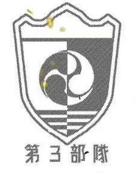

第三部队是防卫队中的重要作战力量,队长是亚白米娜，副队长为保科宗四郎，队员有四之宫奇可露等。亚白米娜实力强劲，战斗能力出众，其主武器是安装在腰上的大型火器t-2510；保科宗四郎出身怪兽讨伐家族，擅长使用军刀；四之宫奇可露是防卫队长官之女，实力强大，使用斧头型专用武器，在队中战斗力仅次于队长和副队长。他们负责应对日本境内出现的怪兽袭击事件，保护民众安全以及城市设施。如在立川基地曾遭受大量等级强度超过6的怪兽攻击时，第三部队积极投入战斗，抵御怪兽入侵。团队成员实力强大且各具特色，在战斗中配合默契。队长亚白米娜指挥有方，能够根据不同的战场形势制定合理的作战策略；队员们也都能充分发挥自身优势，协同作战，共同对抗怪兽 |  |
欢迎你们的加入！！